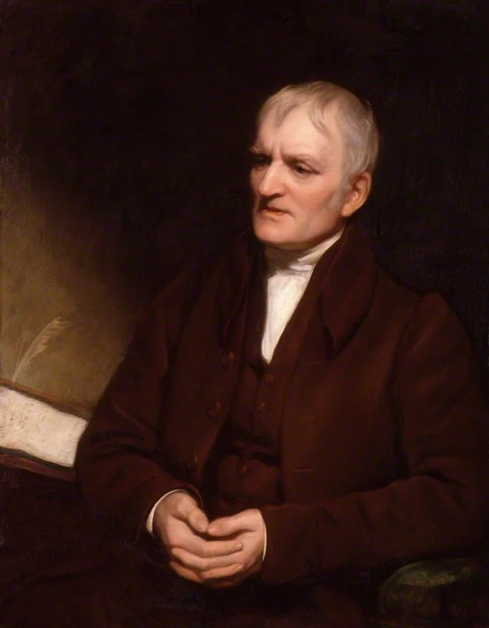
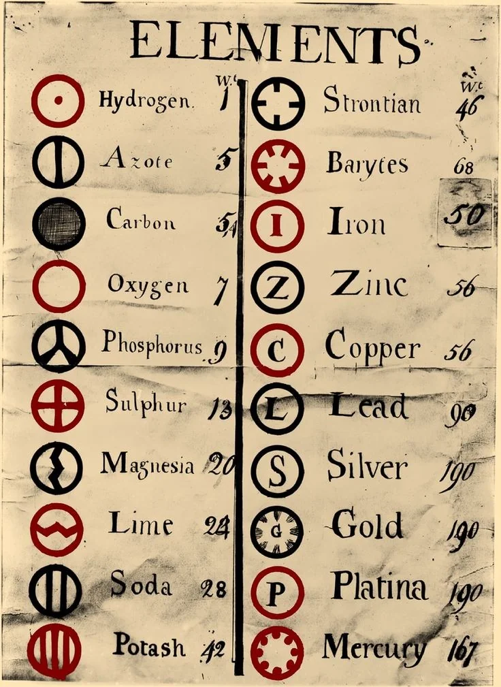
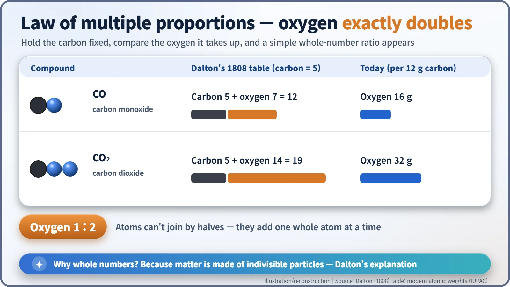
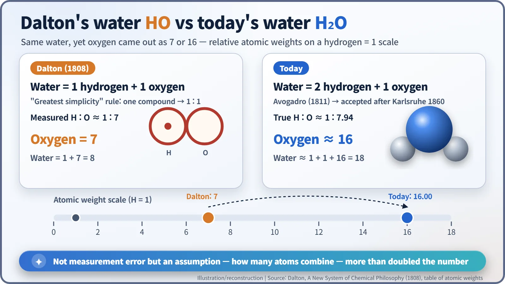

Nuclear History · 002
Weighing the Invisible — How Dalton's Atomic Theory (1808) Gave Every Atom a Weight
John Dalton gave each element an atom with its own weight, explained why compounds combine in whole numbers, and got water wrong in an instructive way.
In 1808 a Manchester schoolteacher, John Dalton, proposed that every element is made of identical atoms with a characteristic weight, and that chemical reactions merely rearrange them. His table of relative atomic weights turned the atom from a philosophical idea into something chemists could measure, even though his own number for oxygen was off by more than half. [1]
A unit with a name
Ever read a biology paper or a lab-supply catalogue that says a protein is "about 150 kDa"? That Da stands for dalton, the unit chemists and biologists use for the mass of atoms and molecules. It is also a person: John Dalton (1766–1844), an English schoolteacher who was the first to put the idea that every atom has its own weight into the language of experimental science. [6]

When chemistry picked up the balance
By the late 18th century, chemistry was turning into a science of weighing. In 1789 Antoine Lavoisier's Traité élémentaire de chimie (Elementary Treatise of Chemistry) set out the principle that the total mass does not change in a reaction. In the late 1790s Joseph Louis Proust championed the law that a given compound always contains its elements in the same proportion by mass. Both rules worked. Nobody could say why.
Dalton was born in 1766 in Eaglesfield, near Cockermouth in Cumberland, in north-west England, into a poor Quaker family; his father was a weaver. (Whether his birthday was 5 or 6 September is uncertain, because no birth record survives.) At twelve he was already teaching at the village school. In 1793 he moved to Manchester to teach mathematics and natural philosophy at New College, and for the rest of his life he presented his research to the Manchester Literary and Philosophical Society, known as the "Lit & Phil". [2]
He was also a dedicated weather-watcher who recorded the weather every day from 1787 until his death, and his very first paper to the Society, read in 1794, was about his own colour blindness. That is why red–green colour blindness is still sometimes called "daltonism". In 1995, DNA from his preserved eye confirmed he had deuteranopia.
A small table at the end of a paper about gases
Surprisingly, the atom story began with air. Dalton studied mixtures of gases and how much of each gas water can dissolve, and came to suspect that the answer lay in the particles themselves: each gas, he reasoned, has particles of a different size and weight.
On 21 October 1803 he read a paper to the Lit & Phil, "On the Absorption of Gases by Water and other Liquids". At its end sat a "Table of the relative weights of the ultimate particles of gaseous and other bodies", with hydrogen set to 1 and roughly twenty substances listed. It is usually counted as the first table of relative atomic weights. One catch that trips people up: the paper was not printed until 1805, so the reading date and the publication date differ. (A few sources give 23 October, but that was a Sunday; the 21st is the better-supported date.) [4]
The first detailed account of the theory actually came from someone else. Thomas Thomson, who had the idea explained to him by Dalton in 1804, described it in the third edition of his A System of Chemistry in 1807. Dalton's own version appeared in 1808 as Part I of A New System of Chemical Philosophy, a work that kept growing in instalments until 1827. In it he drew each element as a circle filled with a dot, lines or a letter, and he joined the circles together to draw compounds.

The theory in four lines
In modern words, Dalton's atomic theory says:
- Matter is made of tiny atoms that cannot be divided further.
- All atoms of one element have the same weight; atoms of different elements have different weights.
- Chemical reactions neither create nor destroy atoms; they only rearrange them.
- Compounds are atoms of different elements joined in simple whole-number ratios.
He put the third point memorably in 1808: "No new creation or destruction of matter is within the reach of chemical agency. We might as well attempt to introduce a new planet into the solar system, or to annihilate one already in existence, as to create or destroy a particle of hydrogen." Lavoisier's conservation of mass had just been rewritten in the language of single atoms, and with it came something nobody had offered before: a measurable quantity, the relative atomic weight. [1]
Why exactly double?
The theory's real power shows up in the numbers. Carbon and oxygen form two compounds, and for the same amount of carbon, the amount of oxygen in one is exactly twice that in the other. Use Dalton's own 1808 table (carbon 5, oxygen 7) and carbon monoxide comes to 12 while carbon dioxide comes to 19, which is 7 versus 14 parts of oxygen. Use modern values and 12 g of carbon pairs with 16 g of oxygen in CO and 32 g in CO₂. Either way, it is 1 to 2.
| Compound | Dalton's 1808 table (carbon = 5) | Modern values (per 12 g carbon) |
|---|---|---|
| Carbon monoxide, CO | 5 + 7 = 12 | 16 g oxygen |
| Carbon dioxide, CO₂ | 5 + 14 = 19 | 32 g oxygen |
| Oxygen ratio | 7 : 14 = 1 : 2 | 16 : 32 = 1 : 2 |
Atoms can't join by halves, so when the oxygen goes up, it goes up by one whole atom at a time. This is the law of multiple proportions, and Dalton's atoms explained it more naturally than anything else on offer. [4]

How oxygen ended up weighing 7
Look at Dalton's table, though, and oxygen weighs 7, not 16. The culprit was an assumption he called the rule of greatest simplicity: "When only one combination of two bodies can be obtained, it must be presumed to be a binary one." In other words, if two elements form just one compound, assume one atom of each. So water became HO. He measured the mass ratio of hydrogen to oxygen in water as about 1 to 7, and with one atom of each, oxygen's atomic weight came out as 7. [1]
In reality water has two hydrogen atoms, and the mass ratio is closer to 1 to 7.94, so oxygen weighs about 16 (15.999 today). Gay-Lussac's law of combining gas volumes (announced 1808, published 1809), which Dalton distrusted, and Amedeo Avogadro's hypothesis of 1811 (equal volumes of gas at the same temperature and pressure contain equal numbers of molecules) pointed to H₂O. But the idea was not widely accepted until after the first international congress of chemists, held in Karlsruhe, Germany, on 3–5 September 1860, where Stanislao Cannizzaro used Avogadro's hypothesis to put atomic weights in order. [5]

A theory that was useful even where it was wrong
Dalton's atom was a solid ball that could not be split. That picture fell apart once the electron (1897) and the atomic nucleus (1911) were discovered, and the claim that all atoms of an element weigh the same had to be revised when isotopes, atoms of one element with different weights, were recognised in 1913. Yet his starting point, that each element has a characteristic atomic weight, led to the effort to line up the elements by weight, and later to the mass number of the nucleus and the idea of isotopes.
Honours came late but came: he was elected a Fellow of the Royal Society in 1822 (nominated without his knowledge) and received a Royal Medal in 1826. He presided over the Lit & Phil from 1817 until his death on 27 July 1844 in Manchester, aged 77. His body lay in state at Manchester Town Hall, and more than 40,000 people filed past. Every time a laboratory weighs a molecule in daltons, one dalton being one-twelfth of the mass of a carbon-12 atom, his name is spoken again. [6]